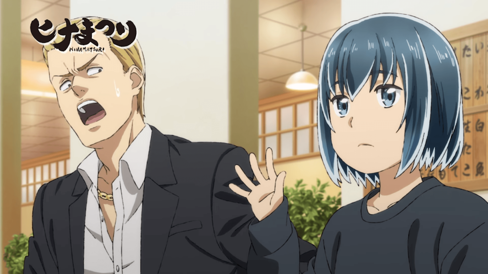
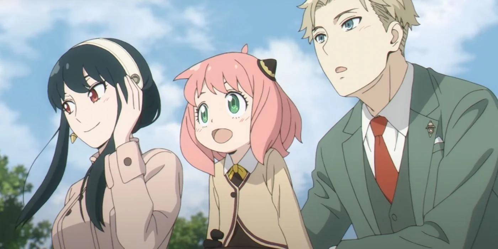
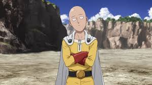
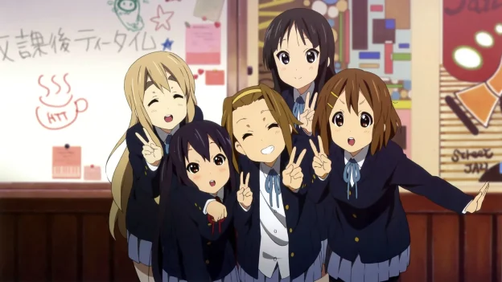
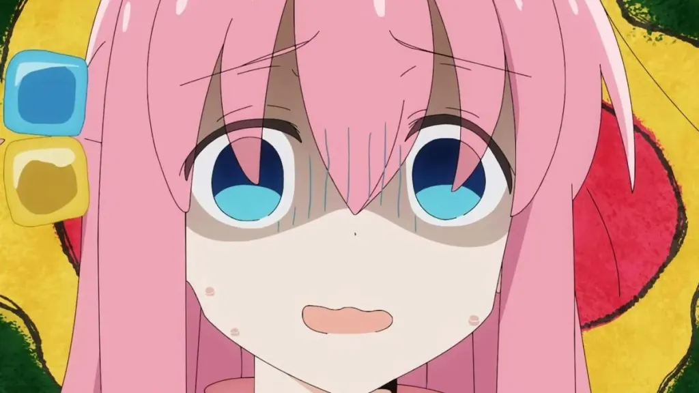
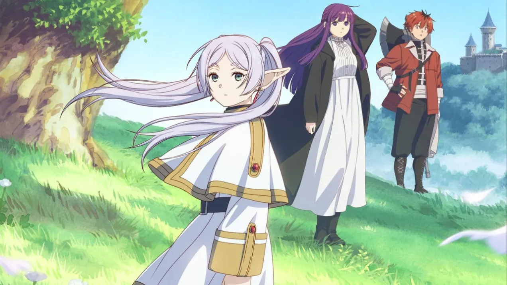
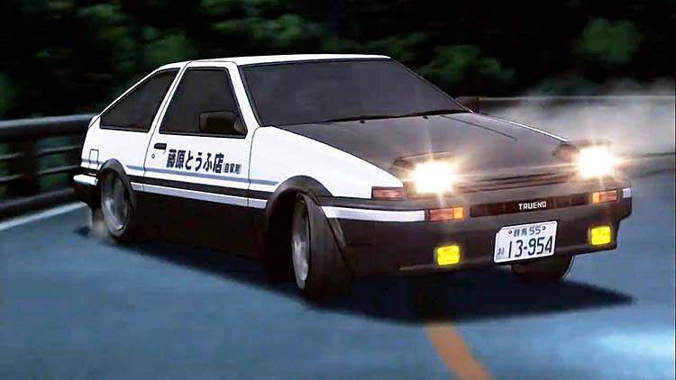
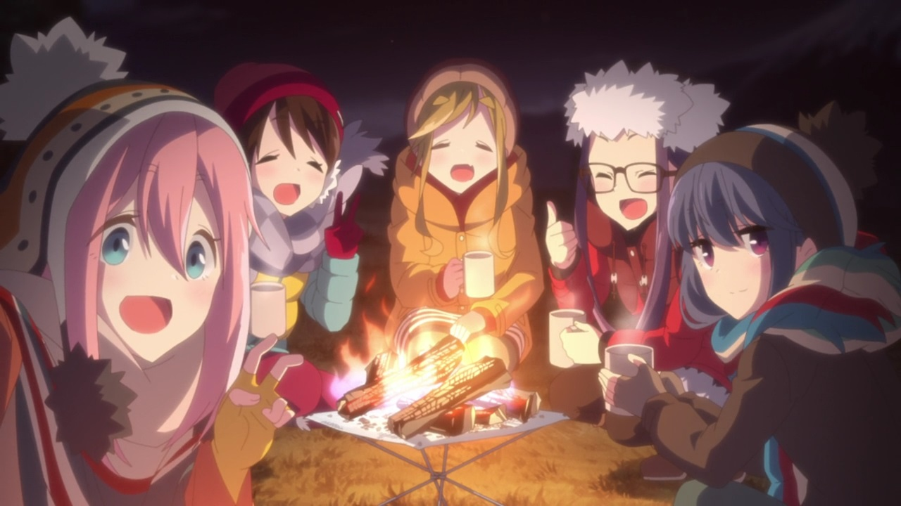

Top 10: Hinamatsuri 
Hinamatsuri is a fantastic anime that blends comedy, heartfelt moments, and a touch of the supernatural. The story follows the eccentric and often chaotic relationship between Nitta, a yakuza member, and Hina, a mysterious girl with psychic powers who suddenly enters his life. The humor is sharp and quirky, while the character development and emotional depth give it a surprising level of warmth. Whether it's the hilarious misadventures or the touching moments between the characters, it’s a must-watch for anime fans who enjoy a mix of humor and heart!
Top 9: Spy Family 
Spy x Family truly is peak entertainment! The comedic dynamic between the three main characters—Loid Forger (the cool and calculating spy), Yor Forger (the sweet yet deadly assassin), and Anya (the hilariously adorable telepath)—is nothing short of amazing. Each character brings something unique to the table, and their interactions are a perfect blend of heartwarming family moments and laugh-out-loud chaos. Anya’s mischief and funny reactions, Yor’s awkward attempts to be a "normal" mom, and Loid’s struggles to keep his mission on track while managing this quirky "family" make every episode a delight. The way their secret lives intersect, often creating ridiculous situations, keeps the story fresh and engaging. It’s the perfect mix of comedy, action, and wholesomeness—an absolute must-watch for fans of all genres!
Top 8: One Punch Man 
One Punch Man is a masterpiece in its simplicity and subversion of the superhero genre. At its core, the plot revolves around Saitama, the bald and unassuming protagonist, who can defeat any opponent with just one punch—boom. But beneath the overpowered hero gimmick lies a deeper narrative: the existential struggle of being too strong.
Top 7: K-On! 
K-On! is the definition of peak "slice-of-life" anime. It’s a show that thrives on simplicity, charm, and pure vibes. The plot revolves around a group of high school girls in the Light Music Club who, while supposedly focused on making music, mostly spend their time drinking tea, eating sweets, and hanging out. And that’s literally it—and it’s perfect.
Top 6: Lucky Star
Lucky Star is absolute cinema in its own right, known for its quirky humor and slice-of-life storytelling. The show thrives on randomness, taking everyday mundane situations and turning them into comedic gold. The characters, led by the iconic Konata Izumi, are full of charm, each with their own unique personality that adds to the overall dynamic of the group. While the plot is minimal, the quick-witted dialogue and hilarious cultural references make *Lucky Star* a fan-favorite. It’s a feel-good show that delivers a goofy, lighthearted atmosphere from start to finish.
Top 5: Bocchi The Rock
Bocchi The Rock resonates deeply with anyone who has ever struggled with social anxiety or feelings of inadequacy. The main character, Hitori "Bocchi" Gotou, dreams of becoming a rock star but faces internal battles with her shyness and lack of self-confidence. This relatable struggle makes her journey all the more compelling, as viewers root for her to overcome her fears and find her place in the world. The show’s balance of humor, heart, and music creates a captivating experience. The performances and music scenes are beautifully animated, making the show not just a coming-of-age story but also a celebration of music and self-expression.
Top 4: Your Name

Your Name (Kimi no Na wa) is a breathtakingly beautiful anime film that has captured the hearts of viewers worldwide. Directed by Makoto Shinkai, the film tells the story of two teenagers, Taki and Mitsuha, who mysteriously begin swapping bodies despite living in different parts of Japan. The plot masterfully intertwines romance, fantasy, and drama, with themes of fate, love, and longing running throughout. The animation is nothing short of stunning, with vibrant colors, meticulously detailed backgrounds, and fluid character movements. The emotional depth of the story, combined with its visual splendor and a memorable soundtrack by RADWIMPS, makes Your Name one of the most celebrated and iconic anime films of all time.
Top 3: Frieren
Frieren: Beyond Journey’s End takes a fresh approach to the traditional fantasy adventure genre. Rather than focusing on an epic quest to defeat a villain, the story explores what happens after the hero’s journey is over. Frieren, an elf mage who outlives her companions due to her long lifespan, is left to reflect on the passage of time, her memories, and her feelings towards the people she has lost. The show moves away from power fantasies and instead delves into the emotional weight of immortality and the inevitable change that comes with time. It’s a slow-burn story that’s deeply introspective, offering viewers a unique perspective on the fantasy world and the characters who inhabit it.
Top 2: Initial D
Initial D is a high-octane anime that sparked a generation’s love for cars and street racing. Following the journey of Takumi Fujiwara, a seemingly ordinary teenager with extraordinary driving skills, Initial D introduces viewers to the thrilling world of drift racing. With its iconic Eurobeat soundtrack, intense race sequences, and detailed focus on car mechanics, the show delivers pure adrenaline and excitement. For many, it’s more than just an anime about cars; it’s a nostalgic series that kickstarted their passion for the automotive world. The impact of *Initial D* can still be felt today, especially within the car enthusiast community, where it remains a beloved and influential series.
Top 1: Yuru Camp
Yuru Camp (Laid-Back Camp) is peak relaxation anime. It’s the perfect show to wind down with, as it focuses on a group of girls who enjoy camping in various scenic locations across Japan. The series doesn’t have any dramatic plot twists or action-packed moments; instead, it thrives on its peaceful atmosphere, slow-paced storytelling, and charming character interactions. The picturesque landscapes and soothing soundtrack enhance the serene vibe, making you feel like you’re right there enjoying nature alongside the characters. The simplicity of Yuru Camp is what makes it so special—it's a celebration of the small joys in life, like drinking hot cocoa by the campfire or watching the sunset after a long day of hiking. Pure, wholesome vibes from start to finish.